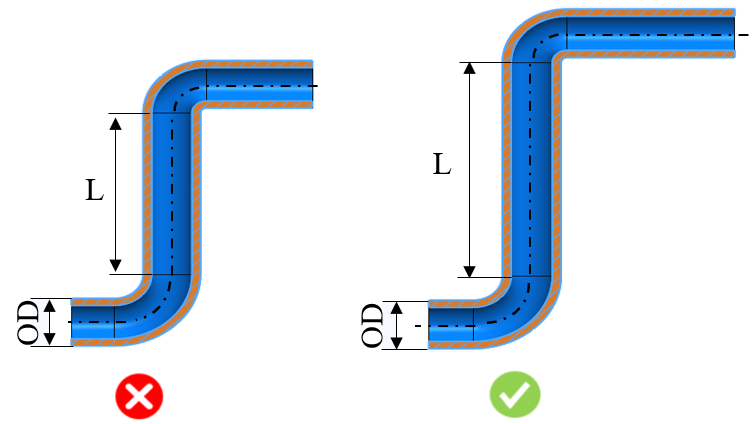

本ルールは、チューブの外径に基づいて、曲げと曲げの間に必要な最小直線長さを特定します。
適切なクランプ力でチューブをクランプダイに正しく保持するためには、十分なチューブ長さが必要です。これにより、常にスムーズな曲げ加工が可能になります。直線長さが不十分な場合、クランプダイが短くなり、接触面積が減少して圧力が増大し、チューブ損傷につながる可能性があります。この問題を解決するには特別な治工具が必要となり、製造コストが増加します。そのため、設計者は曲げ間に一定の最小直線長さを確保する必要があります。
一般的な設計ガイドラインでは、曲げと曲げの間にチューブの最小直線長さを確保することが推奨されています。

ここで、
L = 曲げ間の直線長さ
OD = チューブ外径
注記：
チューブの断面形状は円形であり、かつチューブ長さ方向に対して肉厚が一定である必要があります。